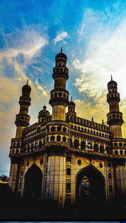

The Charminar is as much the
signature of Hyderabad as the Taj
Mahal is of Agra or the Eiffel Tower
is of Paris. Mohammed Quli Qutb
Shah, the founder of Hyderabad,
built Charminar in 1591 at the centre
of the original city layout. It is said
to be built as a charm to ward off a
deadly epidemic raging at that time.
Four graceful minarets soar to a
height of 48.7 m above the ground.
Charminar has 45 prayer spaces and
a mosque in it. Visitors can view the
architectural splendour inside the
Charminar.
The monument isilluminated in the evenings and a
pedestrianisation project around the
monument is under implementation.